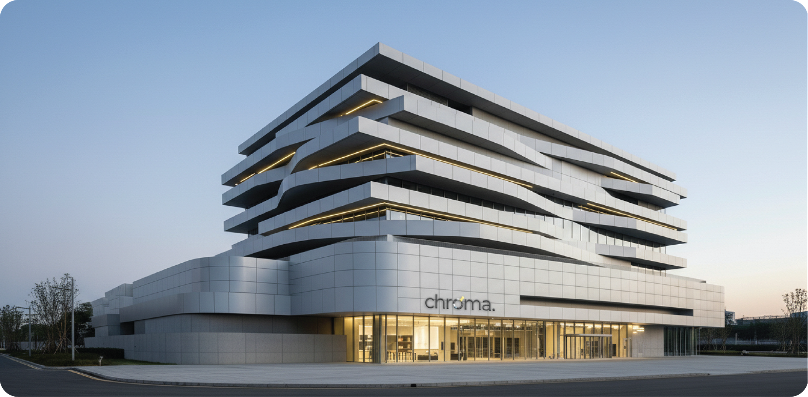
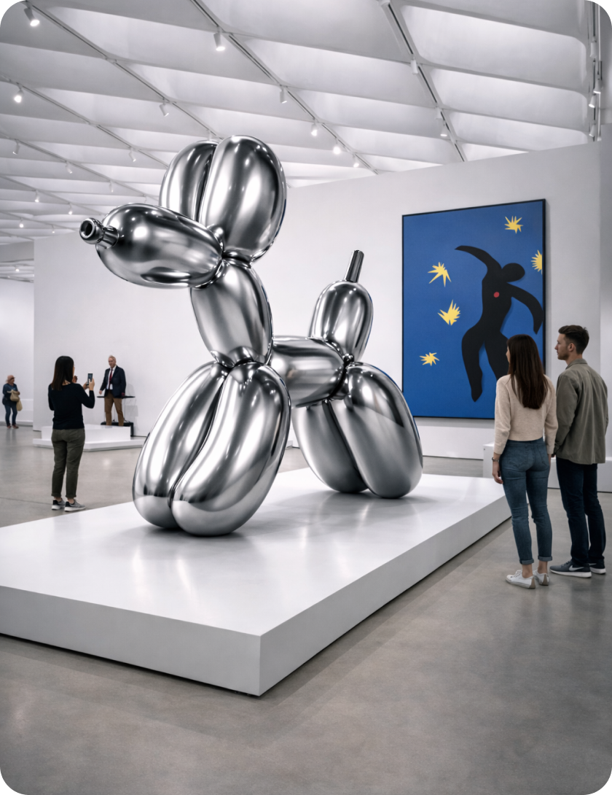
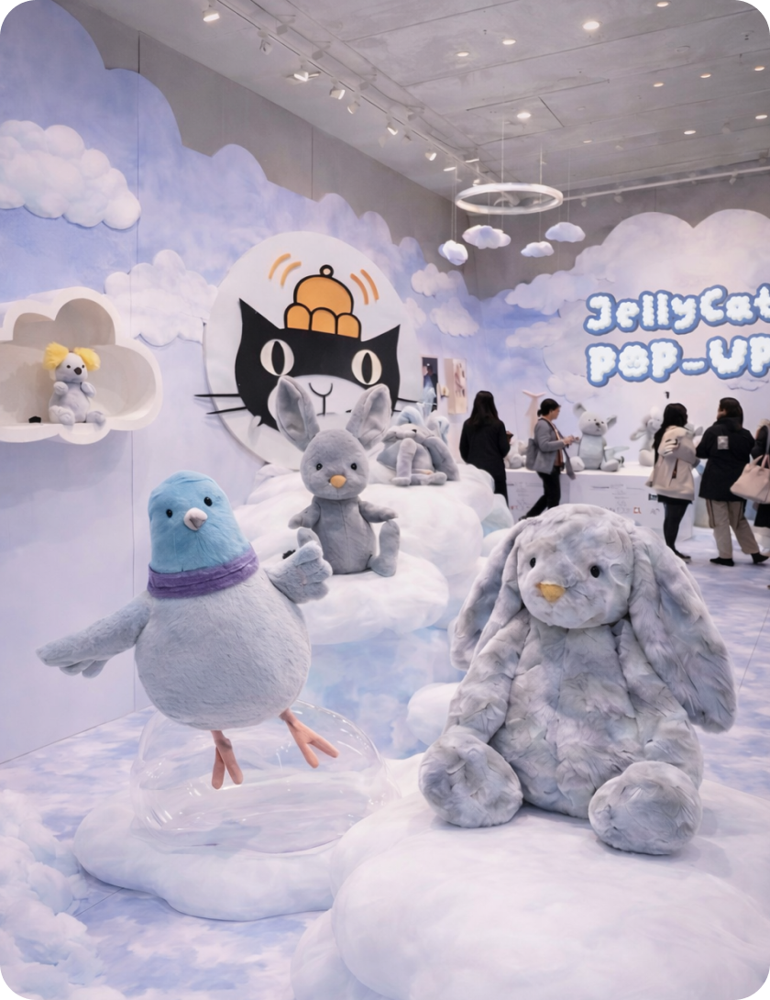
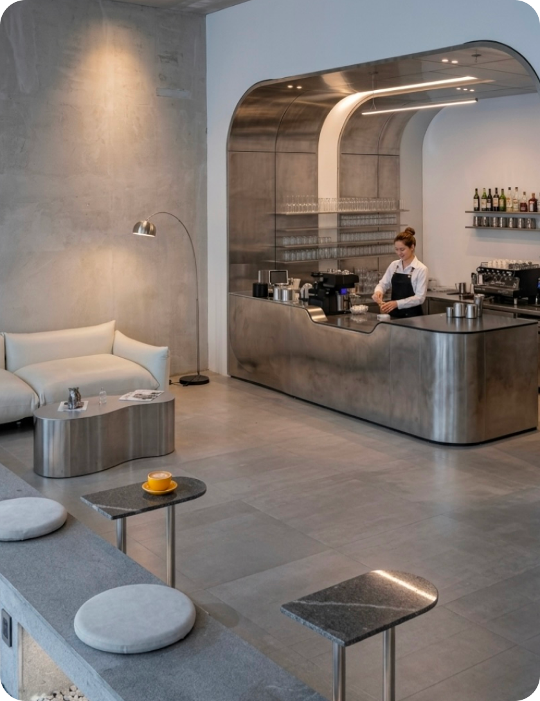
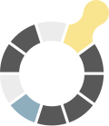

ABOUT chroma.

chroma는 하나의 공간 안에서 다양한 콘텐츠를 연결해, 각자의 방식으로 머물 수 있도록 구성되어 있습니다.
전시와 팝업을 둘러보고, 오브제를 통해 취향을 확장하며, 편안히 쉬어가는 흐름까지 자연스럽게 이어집니다.
방문자는 부담 없이 머물며, 자신에게 맞는 속도로 공간을
경험할 수 있습니다.
MINIMAL COLOR, MAXIMUM CONTRAST. MINIMAL COLOR, MAXIMUM CONTRAST. MINIMAL COLOR, MAXIMUM CONTRAST.

다양한 콘텐츠를 따라 공간을 감상하며
새로운 요소를 발견하는 경험을 제공합니다.
자신의 취향에 맞게 선택하고
오브제와 굿즈로 간직할 수 있는 공간입니다.


일상에서 벗어나 음료와 디저트를 즐기며
여유롭게 보낼 수 있는 시간을 제공합니다.
chroma는 ‘채도(Chroma)’에서 출발한 이름으로, 무채색을 기반으로 한 공간에
최소한의 색을 더해 콘텐츠의 대비를 선명하게 드러내는 브랜드입니다.

심볼은 색상환의 구조를 단순화하여, 공간 속 흐름과 연결을 표현합니다.
무채색을 기반으로 최소한의 컬러를 더해 강한 대비를 만들어내며, 이를 통해 chroma만의
시각적 아이덴티티를 완성합니다.